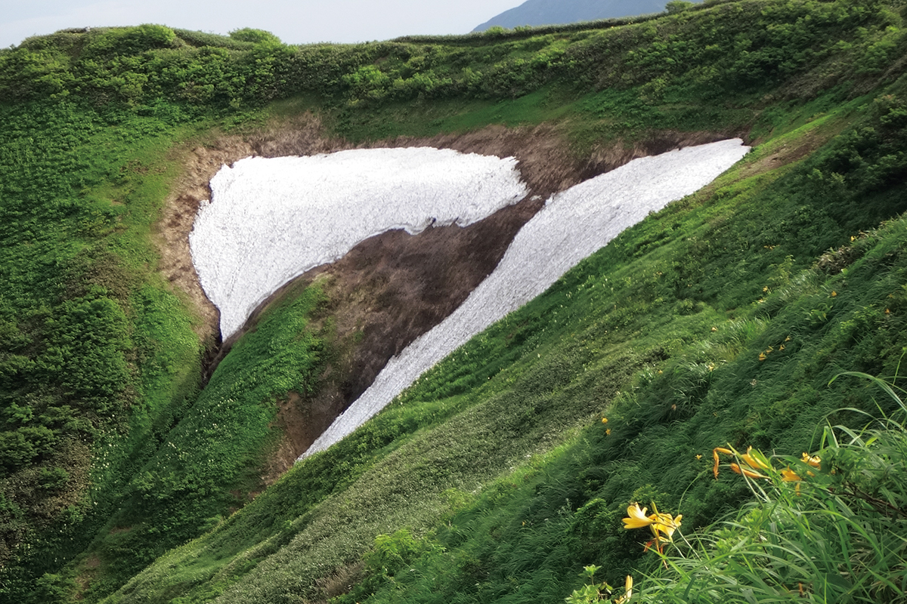
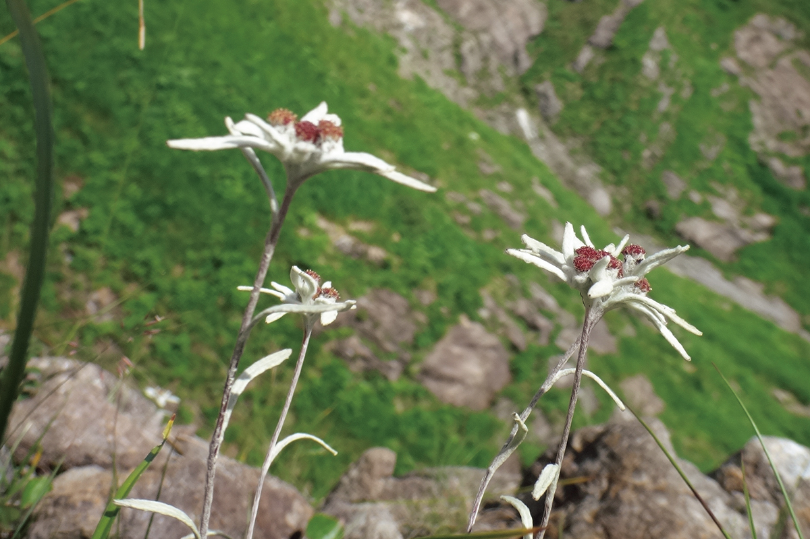
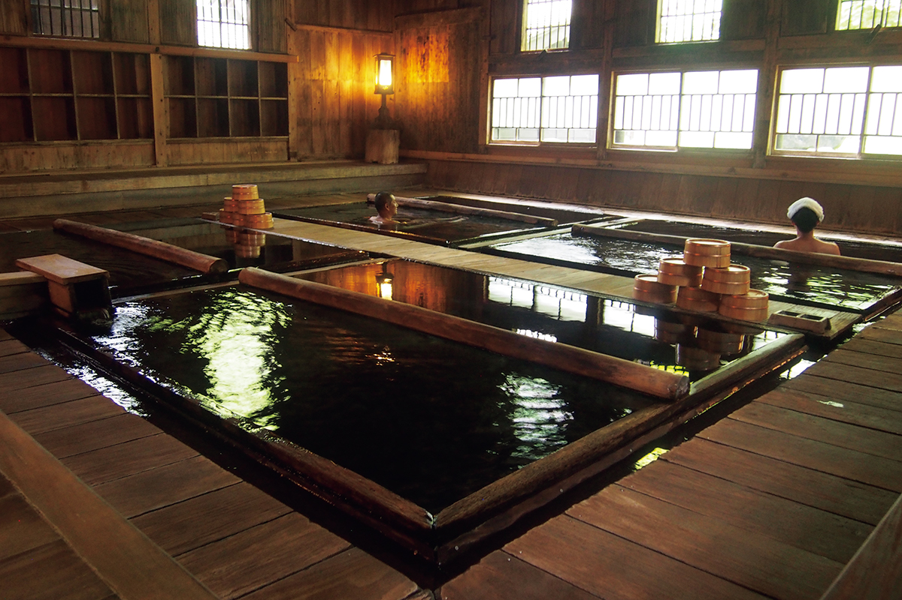
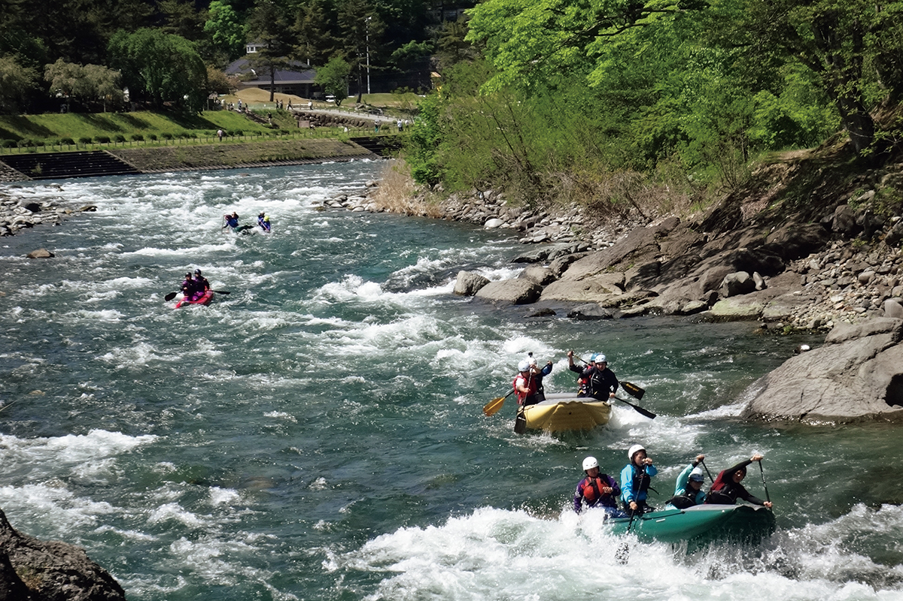
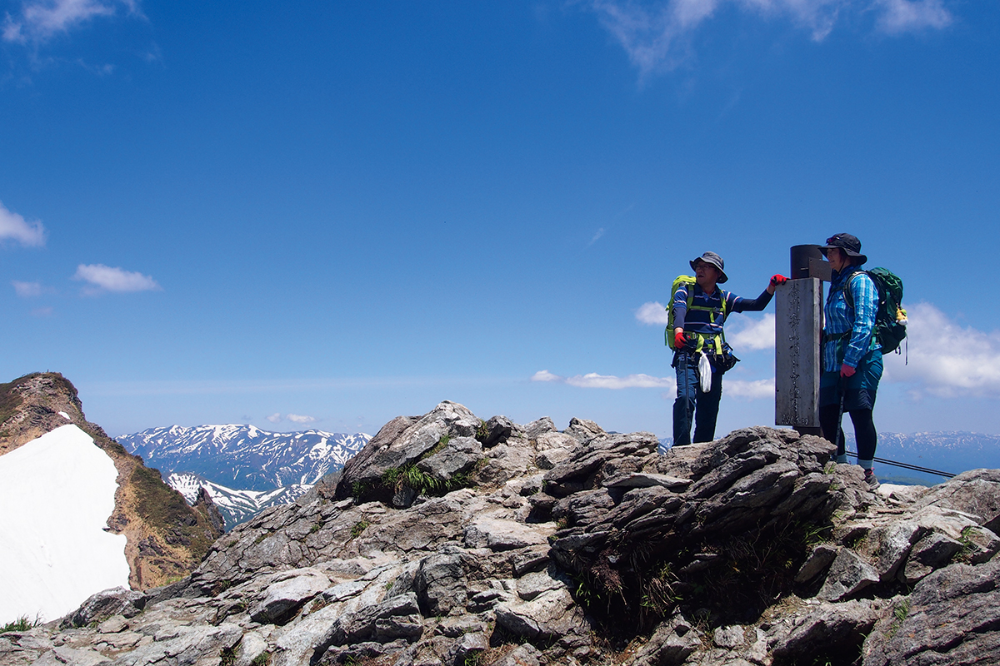

Префектура Гумма · Минаками · природа
Минаками: экопарк ЮНЕСКО у истоков реки Тонэ, где природу берегут и показывают гостям

Минаками стоит у истоков реки Тонэ, и воду отсюда пьют тридцать миллионов жителей столичного региона. В 2017 году город включили в сеть экопарков ЮНЕСКО: за то, что он бережёт леса и реки и строит жизнь в согласии с природой.
Природа
Вода и лес на севере Гуммы
Город Минаками занимает северную окраину префектуры Гумма, верховья реки Тонэ. Его называют водохранилищем столичного региона: от этих гор и лесов зависит вода для тридцати миллионов человек. Особый климат, рельеф и горные породы дали приют множеству редких растений и животных.

Вокруг хребта Танигава растёт хособа-хина-усуюкисо, маленький эдельвейс, которого больше нигде нет. На склонах сохранились почти нетронутые буковые леса, такие же, как в горах Сираками на севере Хонсю, которые внесены в список всемирного природного наследия.
Охрана
Лес Акая и экопарк ЮНЕСКО
В лесу Акая живут беркут и горный хохлатый орёл, обе птицы под угрозой исчезновения. Защищать их взялся «Проект Акая». Эта и другие природоохранные работы, а главное, сам подход города, который строит жизнь вместе с дикой природой, а не против неё, были отмечены в 2017 году: Минаками стал экопарком ЮНЕСКО.
В 2023 году здесь начали ещё один проект, «Nature Positive». Его цель в том, чтобы сохранить разнообразие живого и построить устойчивую жизнь города.

Активности
Как почувствовать лес и воду
Природу Минаками берегут, но не прячут от гостей. По верховьям Тонэ сплавляются на рафтах, по озёрам и истокам рек ходят на каноэ, а в каньонинге спускаются по горным ручьям без лодки, своим ходом.

Есть и маршруты по суше: поездки на горных велосипедах по бездорожью и треккинг к видам на хребет Танигава. О горнолыжном курорте на горе Танигава рассказывает отдельная статья.

Экотуры на горе Танигава устраивает совет по экотуризму вместе с другими местными организациями. Гиды хорошо знают эти места и по дороге рассказывают о природе, животных и растениях, о старых горных историях. Так Минаками и предлагает знакомиться с собой: через воду и лес, которые здесь хотят сохранить для следующих поколений.
Экопарк ЮНЕСКО Минаками
- Адрес
- префектура Гумма, уезд Тонэ, Минаками, Гокан, 318 (мэрия, отдел планирования)
- Телефон
- +81 278-62-2111